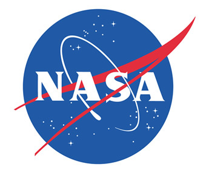

Bienvenido a la NASA
La NASA (Administración Nacional de Aeronáutica y del Espacio) es la agencia espacial de los Estados Unidos, encargada de la investigación y exploración del espacio. Desde su fundación en 1958, ha liderado misiones históricas como el aterrizaje en la Luna en 1969 y el envío de rovers a Marte.
Explora nuestras misiones, avances científicos y tecnología espacial. Descubre cómo trabajamos para llevar la humanidad más allá de nuestro planeta.
Misiones Destacadas
- Apolo 11: Primer aterrizaje humano en la Luna.
- Rovers en Marte: Explorando el planeta rojo.
- Voyager: Las sondas más lejanas enviadas al espacio.